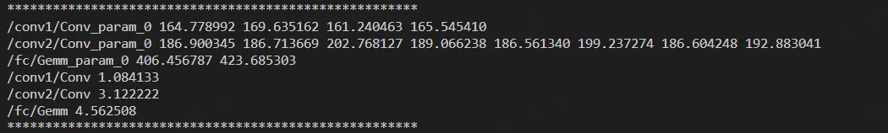

本文讨论了 ncnn 和 tengine 两个框架在量化推理上的逻辑，并比较了它们之间的区别与联系，以及一点自己的思考。
风雨送春归，飞雪迎春到。
已是悬崖百丈冰，犹有花枝俏。 ---- 教员
------ 大家好啊 我是 暮冬 Z 羡慕
# 量化
这里仅简单介绍一下量化，不会展开，有机会再详细写一下量化算法。
# 什么是量化
量化的核心思想是将连续的浮点数域映射到一个更小的、离散的整数集合上。这通过将浮点数值舍入或映射到最近的整数值来实现，同时保持整个模型表示的动态范围。例如，一个原本使用 32 位浮点数表示的权重值，在量化后可能会被转换为 8 位的整数，这样每个权重只需占用更少的存储空间，并且计算时可以利用专门针对整数优化的硬件加速器，从而提高推理速度并降低能耗。
# 量化的分类
tensorflow 官网上的这张图详细的解释了量化的种类和区别：
- 基本的 float32 模型： tensorflow 导出的 TFlite models
- 训练后 float16 模型 ： 量化为 float16，仍然是浮点数模型，精度损失较小
- 量化感知训练： 在训练过程中就引入量化操作，使模型有机会适应量化带来的误差，通常能获得比单纯训练后量化更好的性能。
- 训练后动态范围量化： 对固定参数进行量化，但是权重，但是层的输入输出没有进行量化。 不需要校准数据集
- 训练后整形量化： 全整形量化，固定参数和层的输入输出都进行了量化，需要校准数据集
- 训练后整形量化 int16 的激活： 激活层采用 int16 量化，其余 int8
下面介绍和对比的 NCNN 和 Tengine 仅仅指的是运行再 CPU 上是采用的 Int8 量化策略，都属于训练后整形量化。
# NCNN 量化推理逻辑
# ncnn
腾讯 NCNN
ncnn 是一个为手机端极致优化的高性能神经网络前向计算框架。 ncnn 从设计之初深刻考虑手机端的部署和使用。 无第三方依赖，跨平台，手机端 cpu 的速度快于目前所有已知的开源框架。 基于 ncnn，开发者能够将深度学习算法轻松移植到手机端高效执行， 开发出人工智能 APP，将 AI 带到你的指尖。 ncnn 目前已在腾讯多款应用中使用，如：QQ，Qzone，微信，天天 P 图等。
# 量化逻辑
一、ncnn 仅对两个部分进行了量化
- i. 权重部分 ： 卷积、深度可分离卷积、全连接 三种算子的 权重，量化因子数量等于权重通道数。
- ii. 输入输出 tensor 部分： 卷积、深度可分离卷积、全连接 三种算子 的输入 tensor，量化因子数量为 1.
- iii. 卷积、深度可分离卷积、全连接算子的 bias 部分维持 float 不变
这也就是说，只有卷积、深度可分离卷积、全连接三种算子采用量化的 int8 推理，其余算子仍然采用 float 推理。这样的方式是合理的，因为很多算子因为运算效率和精度的原因，不适合量化推理，所以分成量化的和非量化的算子是同行的做法。地平线公司生产的征程系列芯片对算子是否采用量化推理作出了更精细的分类（主动量化、被动量化、手动量化），感兴趣的可以学习一下地平线的量化逻辑。

上图是一个简单的神经网络模型经 ncnn 量化之后的结果。
这个模型有两个卷积层 + 一个全连接层，外加一些激活、BN、维度变换层。这里可以看到：
- 1. 前三行是权重的量化，后三行是输入输出 tensor 的量化
- 2. 第一行是卷积 conv1 权重量化，该卷积有 4 个卷积核，因此量化因子有 4 个 （ncnn 的量化因子之所以这么大，是因为 ncnn 存储的是量化因子的倒数）
- 3. 第二行是卷积 conv2 权重量化，该卷积有 8 个卷积核，因此量化因子有 8 个
- 4. 第三行是全连接层的权重量化
- 5. 后三行是对应算子的输入 tensor 的量化因子，都只有 1 个
Tengine 框架就不专门介绍算子量化因子的数量了，因为都是一样的。

上图是 ncnn 的量化模型在卷积推理时的逻辑，先忽略掉图中的红线流程，只看蓝线部分的一般流程：
- 1.ncnn 的基本思路是 float 类型输入，float 类型输出
- 2. 跟随蓝线，输入 Input 为 float 类型，经判断不是 int8，将 input 量化为 int8
- 3.int8 类型的 input 于 int8 类型的权重进行卷积运算，运算结果是 int32
- 4. 判断是否需要转 int8，True 还是 Flase 后面再讲，一般流程中为 False，然后将 int32 反量化为 float
- 5.float 经过加偏置 Bias（float 类型）和激活操作之后，得到输出 Output
一般流程中，卷积、深度可分离卷积和全连接这些算子都要进行 量化 - 计算 - 反量化过程，其他算子仍然采用 float 推理。为了减少量化和反量化的计算，ncnn 对特殊情况做了优化，也就是红线流程：
- 1. 当神经网络中存在以下两种情况时走红线流程：1）两个卷积层相邻 conv -> conv 2) 两个卷积层中间夹个 split conv-> split -> conv
- 2. 判断 input 输入是否为 int8，是的话无须量化操作
- 3. 权重和 int8 的输入进行卷积计算之后得到 int32 的输出
- 4. 再以上两种情况下，to Int8 判断为 True，直接将 int32 强转为 int8
- 5. 输出 int8
这种情况下减少了量化 和反量化的操作，一定程度上提高了运行效率。但是在实际测试中似乎效果不好，原因在于，现在的神经网络在卷积层和卷积层之间，基本上会有偏置、BN、激活等操作，很难会有两个卷积层相连的情况。
下面是 ncnn 卷积算子的量化推理的简单抽象：
// f: float I:int8 Scale:量化因子 in: input w:weight out:output bias:偏置 | |
f_in = I_in * Scale_in | |
f_w = I_w * Scale_w | |
f_out = f_in * f_w + f_bias | |
= I_in * I_w * (Scale_in * Scale_w) + f_bias |
第一行对符号进行了注释。
第二行和第三行是量化的基本等式
最后 输出的是 f_out ，反量化因子是 (Scale_in * Scale_w) ，还要加上 float 类型的 偏置 f_bias
# Tengine 量化推理逻辑
# Tengine
Tengine 由 OPEN AI LAB 主导开发，该项目实现了深度学习神经网络模型在嵌入式设备上的快速、高效部署需求。为实现在众多 AIoT 应用中的跨平台部署，本项目使用 C 语言进行核心模块开发，针对嵌入式设备资源有限的特点进行了深度框架裁剪。同时采用了完全分离的前后端设计，有利于 CPU、GPU、NPU 等异构计算单元的快速移植和部署，降低评估、迁移成本。
尽管 Tengine 已经挺久不再维护了，但是作为一个完全使用 C 语言承担推理部分工作的框架，tengine 还是有轻量、框架结构清晰、易于拓展、容易学习、部署简单等优势，还是非常值得学习的。
# 量化逻辑
// f: float int8:int8 int32:int32 Scale:量化因子 in: input w:weight out:output bias:偏置 | |
# 一般性等价关系 | |
f_w = int8_w * scale_w f_out = int8_out * scale_out f_in = int8_in * scale_in | |
f_out = f_w * f_in + int32_bias | |
# tengine 等一些推理引擎 直接将 bias 的量化因子定为： | |
f_bias = int32_bias * (scale_w * scale_in) | |
# float 类型输出等式 | |
f_out = f_w * f_in + f_bias | |
= int8_w * scale_w * int8_in * scale_in + f_bias | |
= int8_w * int8_in * (scale_w * scale_in) + int32_bias * (scale_w * scale_in) | |
= (int8_w * int8_in + int32_bias) * (scale_w * scale_in) | |
int8_out * scale_out = (int8_w * int8_in + int32_bias) * (scale_w * scale_in) | |
int8_out = (int8_w * int8_in + int32_bias) * (scale_w * scale_in / scale_out) |
为了能讲清楚 Tengine 的量化推理逻辑，需要先看懂上面的等式推理。
尽管行数较多，但实际上很简单，只有最基本的多项式推导。首先记一下第一行符号代表的意思，挺直观就不过多介绍了。
- 1.tengine 每个算子都是严格的 int8 输入 int8 输出
- 2. 一般性等价关系中展示了 float 类型和 其 int8 类型的关系
- 3. 第 8 行中，tengine (还有其他一些引擎，如地平线) 对卷积的偏置进行了量化。量化因子直接指定为当前层的
(scale_w * scale_in)。量化后的模型，偏置为 int32 类型。注意肯定不能是 int8 类型，因为其量化因子是(scale_w * scale_in)，采用 int8 绝对会溢出。 - 4. 我们先来看第 11 行，float 类型的输出，将等式
f_out = f_w * f_in + f_bias中右边的 float 类型全部转为 int 类型，这个等式很直观。此时你也应该看到了将 bias 的量化因子直接定为(scale_w * scale_in)的好处了。 - 5. 继续推理等式，第 16 行，将 11 行的等式左边也换成 int8 类型。（ tengine 输入输出都是 int8）
- 6.17 行，int8_out ，也就是 int8 类型的输出，等价于 数据运算
int8_w * int8_in + int32_bias乘上量化因子scale_w * scale_in / scale_out
从上面的推理来看，把 scale_w * scale_in / scale_out 作为一个整体，每个卷积算子只需要进行一次量化运算就行了，和 ncnn (每个卷积算子都需要 量化 反量化 两次计算) 相比，足足减少了一半的量化运算。
但是上面的推理忽略了一个问题，激活。基本上每个卷积层后面都跟着激活层，激活层能不能在量化形式下（整形状态）进行呢，这又是一个值得讨论的问题。
tengine 没有去讨论这个问题，将上面的推理分成两步去做，先通过 * scale_w * scale_in 反量化为 float 类型，做激活，然后再通过 / scale_out 量化为 int8 类型，具体过程看下图：
再简单介绍一下过程，这个过程在前面的公式推理中已经基本提到了。
- 1. 从图中可以看到，输入输出都是 int8
- 2.int8 类型的 输入和权重 经过卷积层 得到的输出是 int32 类型，再于 int32 类型的 bias 相加
- 3. 为了在 float 形式下进行激活操作，
* scale_w * scale_in反量化为 float 类型 - 4. 激活
- 5. 通过
/ scale_out量化为 int8 类型
# 量化讨论和疑问留存
# 简单比较
- a.tengine 和 ncnn 都是将权重量化为 int8，ncnn 将 bias 保留 float 形式，tengine 将 bias 量化为 int32。float 和 int32 所占字节相同，模型量化前后的空间占用上，两者是相当的。
- b. 前面提到 ncnn 仅有 3 个算子采用量化推理，这是合理的，ncnn 主要在手机等设备上运行，效率很高；专门设计的 NPU 芯片支持十几个甚至更多 的算子量化推理；而 tengine 在架构上没有区分量化运行的算子和非量化运行的算子，所有算子一股脑全部采用量化推理，至少直到不再维护后的最后一个版本都是这样。笔者认为这个设计很失败，因为大量不支持量化推理的算子，不得不先反量化，然后进行 float 运算，再量化，徒徒增加了时间、空间，还降低了精度。
- c. 讨论一下 《Tengine 量化推理逻辑》一节中提到的 激活层能不能在量化形式下（整形状态）进行 这个问题。由于大多数卷积算子用到的激活函数 是 Relu，而我们用到的又是 int8 这种对称量化，在这些条件下，理论是可以直接在 整形条件下进行激活计算的。那么整个过程就从下图的左边变成了右边，减少了量化一半的计算量。笔者修改 Tengine 工程并验证了一下，从结果来区别不大。当然笔者没有进行大量测试，感兴趣的欢迎测试和交流。
# 疑问留存
既然量化和反量化过程费时又费力 ，那么有没有一种可能，多个连续的卷积层条件下，只在首尾进行量化和反量化呢？
本博客将在不久后，通过公式、仿真的形式探讨一下其可能性及条件。
# 后记
本博客目前以及可预期的将来都不会支持评论功能。各位大侠如若有指教和问题，可以在我的 github 项目 或随便一个项目下提出 issue，或者知乎 私信，并指明哪一篇博客，我看到一定及时回复，感激不尽！